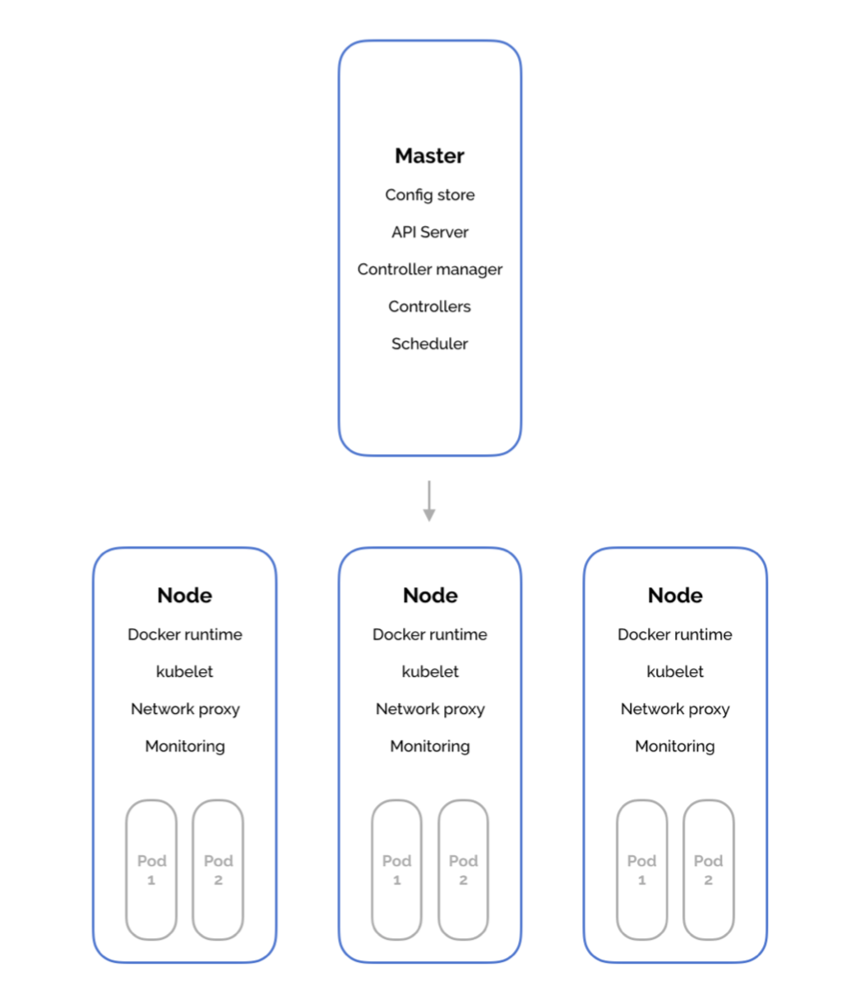

Learn Kube Faster.
Get the #1 guide.
Get my book on Kubernetes for backend developers.
Great for software engineers learning Kubernetes. Perfect for developers getting their CKAD certification.
Get BookKubernetes uses etcd to store all its data – its configuration data, its state, and its metadata. Kubernetes is a distributed system, so it needs a distributed data store like etcd. etcd lets any of the nodes in the Kubernetes cluster read and write data.
I’ve also expanded on this article in this Quora answer.
Kubernetes is a set of processes running on several machines.
(Actual, literal computer processes, not business-speak processes.)
One of these machines is the master and the rest are the worker nodes.

These processes have a range of responsibilities, including
Like most of the code you’ve ever written… Kubernetes needs to store data somewhere.
That’s what etcd is for!
Now, we know that Kubernetes is distributed – it runs on several machines at the same time.
So, it needs a distributed database. One that runs on several machines at the same time. One that makes it easy to store data across a cluster and watch for changes to that data.
Kubernetes uses etcd as its database.
The only nuance is that etcd is a distributed database – because Kubernetes is a distributed system.
etcd manages a lot of the tricky problems in running a distributed database – like race conditions and networking – and saves Kubernetes from worrying about it.
Kubernetes uses etcd as a key-value database store. It stores the configuration of the Kubernetes cluster in etcd.
It also stores the actual state of the system and the desired state of the system in etcd.
It then uses etcd’s watch functionality to monitor changes to either of these two things. If they diverge, Kubernetes makes changes to reconcile the actual state and the desired state.
A Kubernetes cluster stores all its data in etcd.
Anything you might read from a kubectl get xyz command is stored in etcd.
Any change you make via kubectl create will cause an entry in etcd to be updated.
Any node crashing or process dying causes values in etcd to be changed.
The set of processes that make up Kubernetes use etcd to store data and notify each other of changes.
Get my book on Kubernetes for backend developers.
Great for software engineers learning Kubernetes. Perfect for developers getting their CKAD certification.
Get Book